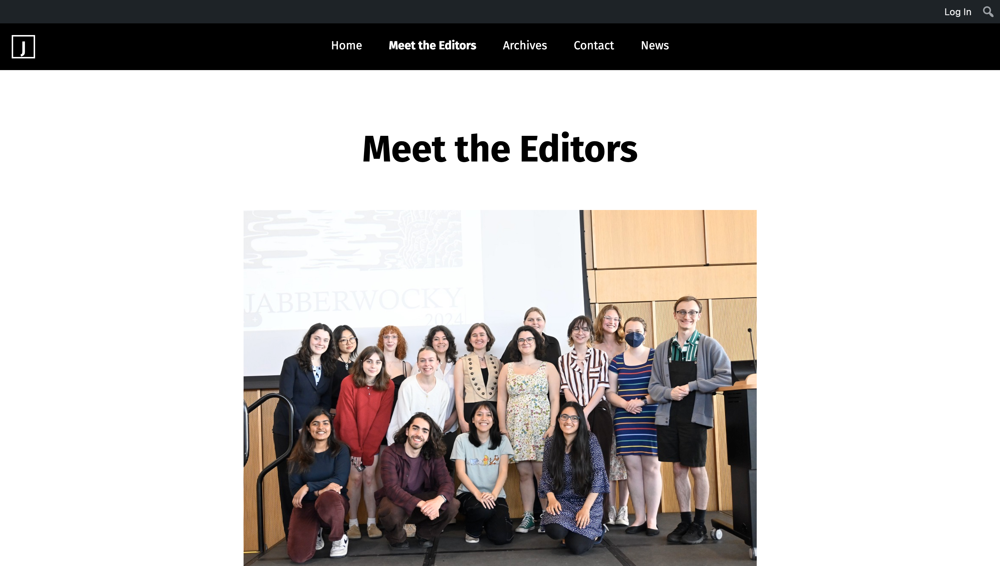
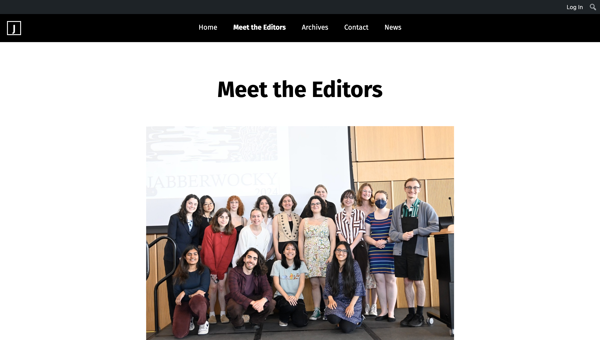

Portfolio
Websites
My Personal Website
I developed this website, the very one you are on right now, over the course of a semester.
Westchester County Website Redesign
For the professional writing capstone course, I redesigned the official website of Westchester County with a particular focus on improving digital accessibility.

UMass Housing-cyclopedia
I took a course in human-computer interaction and developed a website to help UMass students find housing.
UMass Farmer's Market Map
For my web development course, I developed a website to provide UMass students with information on the undergrad farmer's markets.


UMass Center for Data Science
I contributed to the pages on this website and helped to restructure the overall navigation.
UMass Jabberwocky Literary Undergraduate Journal
I took over the web designer role and helped create the Meet the Editors page.
 

Writing Samples
Initiative to Create Therapy Dog Program
I wrote a mock grant proposal to request funding to create a therapy dog program at Putnam County Hospital.
Cooking in Microsoft Word
I developed a 20-30 page user manual for Microsoft Word aimed towards cookbook authors who wouldlike to begin documenting their recipes in Microsoft Word.
Digital Design and Accessibility
I created a project using MadCap Flare and Adobe Illustrator that focuses on digital accessibility and why it matters.
View the PDF _ Visit the Website